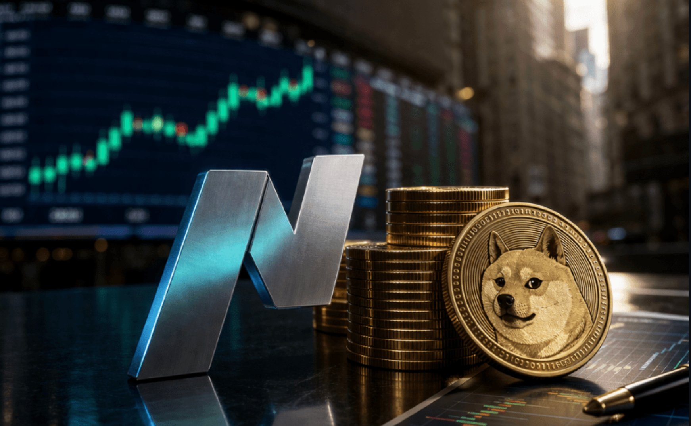

Is the Nasdaq the New Meme Coin?
There was a time when "volatile asset" meant something like a penny stock, crypto, or something retail traders threw a few hundred dollars at the hopes of becoming rich overnight.


There was a time when "volatile asset" meant something like a penny stock, crypto, or something retail traders threw a few hundred dollars at the hopes of becoming rich overnight. Today, that description increasingly fits the Nasdaq 100, one of the most widely held indices in the world.
Over the past year and a half, the market has experienced unprecedented manipulation and price swings, often directly influenced by a single social media account.
Tariffs, Tweets, and the April Collapse
Back in April 2025, President Trump's so-called "Liberation Day" tariff announcement wreaked havoc on global markets. The S&P 500 fell nearly 20% in seven weeks around that time frame before quickly recovering. The Nasdaq, more deeply exposed to global supply chains, took an even harder hit.
What made it surreal wasn't just the drop or the reversal... it was the rapidness with which both occurred. It took just a month and a half for the Nasdaq to plummet over 25%. Less than 3 months later, the index hit a new all-time high, gaining over 35% from the bottom. Despite the tariff situation still being a threat, rhetoric softened, and traders eagerly reentered the market. A tweet here, a press conference there, and suddenly, billions of dollars in market cap reappeared as if nothing had happened.
As of late, policy hasn't been announced through legislation or formal briefings. Instead, the president publicizes anything and everything of importance on Truth Social. Often, Trump walks back on his new policies just to reimpose them two weeks later. For long-term investors trying to value businesses on fundamentals, it's maddening.
The Iran War
The outbreak of the Iran conflict on February 28 pushed oil prices to record highs and sent equities sharply lower. A month later, on April 7th, a ceasefire announcement reversed a significant portion of that move, and further news from the Middle East this week sent the Nasdaq up over 6%. Although this recovery is great, it feels strangely similar to what we experienced at exactly the same time last year.
This entire recovery rally is off the back of a 2-week ceasefire agreement between the US and Iran, opening the Strait of Hormuz and bringing oil prices closer to normal levels. What happens if and when this ceasefire agreement falls through? The US and Iran clearly don't trust each other, as seen in their tumultuous relationship since the Islamic Revolution in the late 1970s.
Numerous Trump tweets about the war have been denied by the Iranian regime. Who is to be trusted?
This grey area of information and the lack of official announcements make me lean towards the ceasefire agreement either being extended or broken.
Though the Strait is confirmed open by Iran, the US still has a naval blockade on the passage and is denying ships from exporting Iranian oil. In response, Iran threatened "necessary measures" if the blockade is not lifted.
The current path that we are on does not point towards a swift and clean end to the war, though this is what the market has priced in. What is unsettling to me, and likely many other traders and investors, is that one Trump tweet could reverse this entire move. On the flip side, a different Trump tweet could ignite a rally of another 5-10%.
Is the Nasdaq a Meme Coin?
So, while no, the Nasdaq is obviously not a "meme coin," the behavior it's exhibited recently is very similar to what is common with incredibly volatile assets, like meme coins. The 5% swings on a single post, the flash crashes on tariff rumors, and the V-shaped recoveries on any hints of diplomacy look far from a mature, cornerstone asset class.
While this volatility is puzzling, it also offers incredible opportunity for investors who are able to play it correctly.
Good luck!